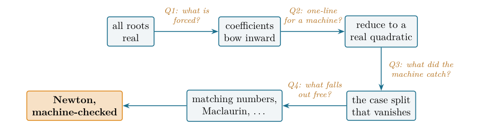
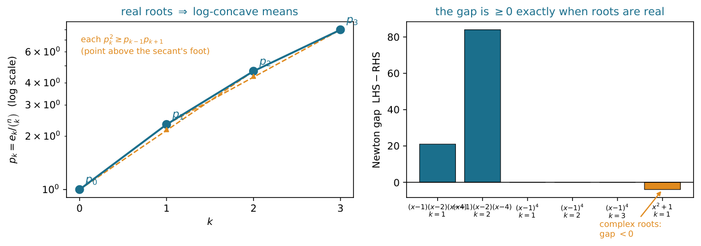
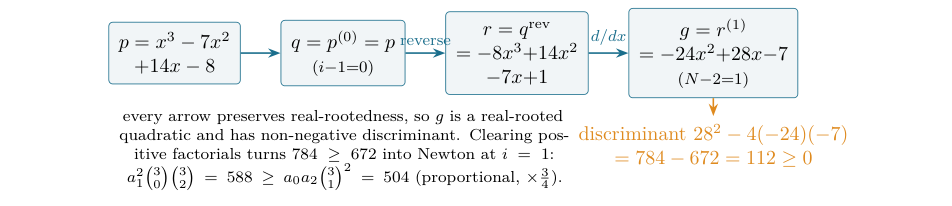

The Inward Bow of a Real-Rooted Polynomial: Newton’s Inequalities, Machine-Checked in Lean 4
At a glance
What the paper contributes
A machine-checked, sorry-free proof in Lean 4 over Mathlib of Newton's inequalities (1707):
for a real-rooted real polynomial of degree n, ek2·C(n,k−1)·C(n,k+1) ≥ ek−1·ek+1·C(n,k)2
for 1 ≤ k ≤ n−1; equivalently the normalized means pk = ek/C(n,k) are log-concave.
- The theorem (Theorem 1): the symmetric-function form assumes p monic; the coefficient form
newton_inequality_coeffassumes nothing. - The route is the classical one (Sylvester; Hardy–Littlewood–Pólya): differentiate, reverse, differentiate again, down to a real-rooted quadratic, whose discriminant is the inequality once positive factorials are cleared.
- Four reusable blocks: real-rootedness under differentiation, iterated differentiation and reversal, and the coefficient-form discriminant for degree ≤ 2, which also absorbs the degenerate case ai−1 = 0.
- Boundary: the mathematics is classical; the paper claims the formalization (to the author's knowledge the first in any proof assistant, June 2026). The equality cases and Maclaurin's chain are named, not proved.
🚀 Start here: Theorem 1: Newton's inequalities for a monic real-rooted polynomial, and log-concavity of the normalized means.
Main results:
- Theorem 1: Newton's inequalities for a monic real-rooted polynomial, and log-concavity of the normalized means
🗺️ Map of the results (click a box to go to it)
Dependencies in the written proof: an arrow A → B means that this proof of B uses A. Every result rests on its written proof; the tags record what was checked besides, and each statement's “Evidence & scope” block says how far. The colour of a box is its strongest tag, in the order above; the tags in the box give the rest. Boxes with a thick border are the main results; click a box to read the statement.
📐 Setting (copied from the paper, §1)
Write a real-rooted polynomial through its roots, \(p(x)=\sum _{k=0}^{n}(-1)^k e_k\, x^{n-k}\), where \(e_k\) is the \(k\)-th elementary symmetric function of the roots, and form the normalized means \(p_k=e_k/\binom {n}{k}\). (§2) I work over \({\mathbb {R}}\). A polynomial is real-rooted () when it splits into linear factors over \({\mathbb {R}}\)—Mathlib’s intrinsic ; equivalently it has \(\deg p\) real roots counted with multiplicity. For the roots multiset \(s=p.\mathtt{roots}\), the elementary symmetric function is \(e_k=\mathtt{Multiset.esymm}\, s\, k\), and \(\binom {n}{k}=\mathtt{Nat.choose}\).
Abstract.
I give a machine-checked, sorry-free proof, in Lean 4 over Mathlib, of Newton’s inequalities (1707): if a real polynomial of degree \(n\) has all real roots, its elementary symmetric functions \(e_k\) obey
equivalently the normalized means \(p_k=e_k/\binom {n}{k}\) are log-concave. This is the classical bridge real-rooted \(\Rightarrow \) log-concave, the elementary base beneath a large body of modern combinatorics—the matching polynomial, the Heilmann–Lieb theorem, the Hodge-theoretic proofs of matroid log-concavity. Mathlib already carries the elementary symmetric functions (Multiset.esymm) and the Vieta relations; it did not carry the inequality, and to the best of my knowledge no proof assistant did. The proof is the classical reduction made fully rigorous: real-rootedness survives differentiation (Rolle) and reversal (\(x\mapsto 1/x\)), so differentiating \(i-1\) times, reversing, and differentiating again collapses the \(k\)-th instance to a real-rooted quadratic, whose discriminant \(b^2-4ac\ge 0\) is the inequality once positive factorials are cleared. I am exact about the boundary: the mathematics is entirely classical (Newton, Maclaurin, Sylvester); the machine-checked symmetric-function form assumes \(p\) monic (no loss—scaling fixes the roots, so the \(e_k\) are unchanged—and the coefficient form assumes nothing); the contribution is the formalization—together with four reusable building blocks (real-rootedness under differentiation, iterated differentiation, and reversal; the coefficient-form discriminant)—and the fact that the real-rooted\(\Rightarrow \)log-concave engine, used informally throughout this line of work, now stands certified. The headline theorem and its blocks depend only on propext, Classical.choice, Quot.sound.
How to read this paper. It is the story of four questions, each opening a section and handing the reader the next. The first asks what reality of the roots forces on the coefficients (Q1); the second, how to turn that into something a machine finishes in one line (Q2); the third, what the formalization caught that the textbook glides over (Q3); the fourth, what falls out once the inequality is certified (Q4). If you read only one thing, read Theorem 1 and Figure 2; the Lean inventory is Table 1; the honest limits are in Section 6; reproduction is three commands.
🖼️ Figure 1

The reader’s map. From a hypothesis on the roots to a certified inequality and its corollaries; each arrow is the question its section answers. Every node is a block of sorry-free Lean.
1 Q1: what does reality of the roots force on the coefficients?
Tell me nothing about a polynomial except that all of its roots are real—not where they are, not whether they repeat—and I can already constrain its coefficients. That such a thing is possible is mildly surprising; that the constraint is sharp, classical, and still doing heavy lifting in today’s combinatorics is the reason for this paper.
History bead. The inequalities are Newton’s, stated without proof in the Arithmetica Universalis (1707) [ 1 ] . Maclaurin (1729) deduced from them the chain of mean inequalities that bears his name [ 2 ] ; a rigorous proof came only in the nineteenth century (Sylvester), and the modern textbook account is Hardy–Littlewood–Pólya [ 3 ] . The mechanism—real-rootedness inherited by the derivative (Rolle) and by the reversal of the polynomial—is the one formalized here.
Write a real-rooted polynomial through its roots, \(p(x)=\sum _{k=0}^{n}(-1)^k e_k\, x^{n-k}\), where \(e_k\) is the \(k\)-th elementary symmetric function of the roots, and form the normalized means \(p_k=e_k/\binom {n}{k}\). Newton’s claim is that the means are log-concave—each one at least the geometric mean of its neighbours. Three centuries on, this is the cheapest instance of a pattern that organizes a large part of modern combinatorics: to prove a sequence log-concave (hence unimodal, hence well-behaved), exhibit it as the coefficients of a real-rooted polynomial, and let Newton finish. The strategy underlies Stanley’s survey of log-concave sequences [ 4 ] , Brändén’s theory of stable polynomials [ 5 ] , and—when no real-rooted polynomial is at hand—the deeper Hodge-theoretic proof of Adiprasito–Huh–Katz that the characteristic polynomial of a matroid is log-concave [ 6 ] . Newton’s inequalities are the elementary, real-rooted floor of that whole building.
For a monic real-rooted real polynomial \(p\) of degree \(n\) and every \(1\le k\le n-1\),
Equivalently (newton_logConcave) the normalized means \(p_k=e_k/\binom {n}{k}\) are log-concave, \(p_{k-1}\, p_{k+1}\le p_k^2\). Both are sorry-free; #print axioms on each reports only propext, Classical.choice, Quot.sound.
✅ Checked when this page was built: NewtonInequalities.lean compiles with Lean 4.35.0, no errors, no sorry. Axioms — newton_inequality, newton_logConcave, newton_inequality_coeff: propext, Classical.choice, Quot.sound.
Reproduce: Lean 4.35.0, Mathlib f0b4c8150aa0; in that Lean project, lake env lean NewtonInequalities.lean (SHA-256 of the compiled file: 69dd05da620a4eb0…; a source page on this site may show it with comments edited, under its own hash).
Trust base: 🔒 kernel only. Lean: 3 results, standard axioms only
Proof: in this note·Formalized: Lean 4, by the author (public formalizations repository)·Covers: the whole statement·Cite: Theorem 1, p. 2, doi:10.5281/zenodo.20693064
🆕 Classical and new: classical: stated by Newton (1707), proved by Sylvester, textbook account in Hardy–Littlewood–Pólya; the paper claims the formalization, to the author's knowledge the first in any proof assistant (searches of June 2026, §6).
Formalized in Lean (see the linked declarations).
💡 In plain words (commentary, not part of the paper)
1. If all roots of a polynomial are real, its coefficients cannot be arbitrary: the normalized means \(p_k=e_k/\binom {n}{k}\) satisfy \(p_{k-1}p_{k+1}\le p_k^2\), so on a log scale they bow inward. For \((x-1)(x-2)(x-4)=x^3-7x^2+14x-8\) the two inequalities read \(147\ge 126\) and \(588\ge 504\); \((x-1)^4\) gives equality everywhere, and \(x^2+1\), whose roots are not real, fails (\(0\not\ge 4\)). 2. Why it is true (the classical proof, here checked by Lean): differentiation (Rolle) and reversal \(x\mapsto 1/x\) both keep all roots real. Differentiating \(i-1\) times, reversing and differentiating again leaves a real-rooted polynomial of degree at most \(2\) whose three coefficients are positive factorial multiples of \(a_{i-1},a_i,a_{i+1}\); its discriminant is \(\ge 0\), and that is the inequality once the factorials are cleared. The base case is stated with \(\deg \le 2\), which also covers \(a_{i-1}=0\) without a separate case. 3. New and not new, as the paper says: the inequalities are Newton’s (1707), proved by Sylvester, in Hardy–Littlewood–Pólya; the paper claims the formalization, to the author’s knowledge the first in any proof assistant (§6). Lean checks the symmetric-function form for monic \(p\) (no loss: the \(e_k\) depend only on the roots) and the coefficient form with no normalization; the equality cases and Maclaurin’s chain are not proved.
🛡️ Evidence & scope
Program: the worked instances: e_k of (x−1)(x−2)(x−4), the Newton gaps 21 and 84, the zero gaps of (x−1)⁴ and the gap −4 of x²+1 (numpy, with tolerance); script in the paper repository, not in the Zenodo record. figures/newton_fig1_bow.py
The monic hypothesis loses nothing: the \(e_k\) are symmetric functions of the roots alone, which scaling does not move, so the inequality holds for every real-rooted polynomial—and the coefficient form newton_inequality_coeff (Section 2), the workhorse from which this is derived, is machine-checked with no normalization at all.
Hand-checkable case. Take \(p(x)=(x-1)(x-2)(x-4)=x^3-7x^2+14x-8\), so \(n=3\) and \((e_0,e_1,e_2,e_3)=(1,7,14,8)\) (Figure 2, left). At \(k=1\) the theorem reads \(e_1^2\binom {3}{0}\binom {3}{2}=147\ge e_0e_2\binom {3}{1}^2=126\); at \(k=2\), \(588\ge 504\). The all-roots-equal polynomial \((x-1)^4\) saturates every inequality (the sharp boundary), and \(x^2+1\)—whose roots are not real—fails it (\(0\not\ge 4\) at \(k=1\)), a reminder that the hypothesis is load-bearing, not decorative (Figure 2, right).
🖼️ Figure 2

Left: the normalized means of \((x-1)(x-2)(x-4)\), plotted on a log axis; each interior mean sits above the geometric mean of its neighbours (the amber arrows), so the sequence is concave—it “bows inward.” Right: the Newton gap \(e_k^2\binom {n}{k-1}\binom {n}{k+1}-e_{k-1}e_{k+1}\binom {n}{k}^2\) at every interior \(k\): positive for the real-rooted cubic, exactly zero for \((x-1)^4\) (the sharp case), and negative for \(x^2+1\). The generating script asserts every plotted value against exact integer arithmetic.
One feature of the statement repays a second look:
why should the gap between real and complex roots surface precisely in the elementary symmetric functions, and precisely as log-concavity?
Because the \(e_k\) are the coefficients of the polynomial, read through Vieta, and real-rootedness is a property that propagates downward through the entire tower of derivatives (Rolle) and survives reversing the polynomial. Those two moves let one isolate any three consecutive coefficients as the coefficients of a real-rooted quadratic—and for a quadratic, “real-rooted” is literally “discriminant \(\ge 0\).” That is Newton’s inequality, and the next section is how a machine walks the same path. Can the textbook gesture become a one-line check?
2 Q2: how do you make it a one-line check for a machine?
History bead. The differentiation–reversal proof is the classical one (Sylvester; the account in [ 3 ] ): grind the index down to a quadratic using operations that preserve reality of roots, then invoke the trivial \(n=2\) case. The whole question is whether “preserves real roots” and “reduce to a quadratic” survive being made fully formal.
The objects.
I work over \({\mathbb {R}}\). A polynomial is real-rooted (RealRooted) when it splits into linear factors over \({\mathbb {R}}\)—Mathlib’s intrinsic Polynomial.Splits; equivalently it has \(\deg p\) real roots counted with multiplicity. For the roots multiset \(s=p.\mathtt{roots}\), the elementary symmetric function is \(e_k=\texttt{Multiset.esymm}\, s\, k\), and \(\binom {n}{k}=\texttt{Nat.choose}\). Two pieces of Mathlib do the bridging: coeff_eq_esymm_roots_of_card is Vieta, \(p.\mathtt{coeff}\, j=p.\mathtt{leadingCoeff}\cdot (-1)^{n-j}\, e_{n-j}\) (so I may pass between the symmetric-function statement and a statement about coefficients), and card_roots_le_derivative is Rolle for polynomials. Mathlib had both halves; it did not have the inequality on them.
The two stones.
Exactly two operations preserve real-rootedness and that is all the proof needs. Differentiation: between consecutive real roots of \(p\) lies a real root of \(p'\) (Rolle), so \(p'\) has \(\ge \deg p-1\) real roots, which is all it can have (RealRooted.derivative, iterated to RealRooted.iterate_derivative). Reversal: \(p^{\mathrm{rev}}\) is, up to a nonzero factor, \(p\) evaluated at \(1/x\), so its roots are the reciprocals of the nonzero roots of \(p\), still real (RealRooted.reverse). With these, the reduction is short.
The reduction (recipe) To prove the inequality at index \(i\) for a real-rooted \(p\) of degree \(n\) (set \(N=n-i+1\)): (1) differentiate \(i-1\) times: \(q=p^{(i-1)}\), real-rooted of degree \(N\); (2) reverse: \(r=q^{\mathrm{rev}}\), real-rooted; (3) differentiate \(N-2\) times: \(g=r^{(N-2)}\), real-rooted of degree \(\le 2\). The three low coefficients of \(g\) are factorial multiples of \(a_{i-1},a_i,a_{i+1}\) (writing \(a_j=p.\mathtt{coeff}\, j\)), and the base case \(g.\mathtt{coeff}\, 1^2\ge 4\, g.\mathtt{coeff}\, 2\cdot g.\mathtt{coeff}\, 0\) is, after clearing those positive factorials, Newton’s inequality at \(i\).
🖼️ Figure 3

The differentiate–reverse reduction, worked on the running cubic at \(i=1\) (relating \(a_0,a_1,a_2=-8,14,-7\)). The final object is a quadratic; a real-rooted quadratic has non-negative discriminant; the factorials the proof cancels are the proportionality constant.
The base case, in coefficients.
The \(n=2\) heart is realRooted_discrim_coeff: a real-rooted \(q\) with \(\deg q\le 2\) satisfies \(q.\mathtt{coeff}\, 1^2\ge 4\, q.\mathtt{coeff}\, 2\cdot q.\mathtt{coeff}\, 0\). Evaluate \(q\) at one of its roots \(x\) and read off \(b^2-4ac=(2ax+b)^2-4a(ax^2+bx+c)=(2ax+b)^2\ge 0\). Stating it on coefficients, with the weak hypothesis \(\deg \le 2\), is the choice that makes the whole proof clean (Section 3).
The bookkeeping.
The one technical part is computing the three low coefficients of \(g\). Mathlib’s coeff_iterate_derivative gives \((p^{(k)}).\mathtt{coeff}\, m= (m{+}k)^{\underline{k}}\, p.\mathtt{coeff}(m{+}k)\) (a falling factorial), and coeff_reverse gives \(q^{\mathrm{rev}}.\mathtt{coeff}\, m=q.\mathtt{coeff}(\mathrm{revAt}\, (\deg q)\, m)\). Composing derivative–reverse–derivative needs the exact degree of each intermediate, which over \({\mathbb {R}}\) (characteristic zero, an IsAddTorsionFree ring) is supplied by degree_derivative_eq: differentiating a degree-\(d{{\gt}}0\) polynomial drops the degree by exactly one. With degrees pinned, the discriminant inequality, after rewriting each falling factorial through \(\texttt{Nat.factorial\_ mul\_ descFactorial}\), becomes
and the binomial identity \(\binom {n}{k}\, k!\, (n-k)!=n!\) (Nat.choose_mul_factorial_mul_factorial) clears these positive factors to match Theorem 1—no inequality reasoning, only positivity. The symmetric-function form then follows from the coefficient form (newton_inequality_coeff) by Vieta, the signs \((-1)^{k-1}(-1)^{k+1}=1\) cancelling and the binomials reindexing by \(\binom {n}{k}=\binom {n}{n-k}\) to the running index \(i=n-k\).
So the answer to Q2 is yes: the inequality reduces, in three reality-preserving moves, to a single discriminant a machine closes by sq_nonneg. And at the one place the textbook waves its hand, the machine made me earn it.
3 Q3: what did the machine catch that the textbook glides over?
History bead. “Differentiate, reverse, reduce to a quadratic” is how the classical proof runs, and the classical proof quietly assumes the reversed polynomial keeps its degree. A proof assistant does not let the assumption pass unexamined—and examining it removed a case split, not added one.
The reversal step preserves degree only when the reversed polynomial’s leading coefficient is nonzero, which fails exactly when \(a_{i-1}=0\). The textbook reflex is a case split: handle \(a_{i-1}=0\) separately. I avoid it entirely, and the reason is the shape of the base case.
What a proof assistant earns its keep on Phrasing the base case on coefficients with the weak hypothesis \(\deg \le 2\) (not \(=2\)) makes it return a true statement even when the quadratic degenerates: if \(g.\mathtt{coeff}\, 2=0\) the inequality reads \(g.\mathtt{coeff}\, 1^2\ge 0\), which is sq_nonneg. Traced back, when \(a_{i-1}=0\) Newton’s right-hand side is \(a_{i-1}a_{i+1}\binom {n}{i}^2=0\) and the left-hand side is a square times non-negative binomials—so the inequality holds for a reason unrelated to the quadratic. The general machinery and the degenerate case are discharged by the same line. The transferable lesson: choosing the weakest honest hypothesis for a base case often dissolves the edge cases a sharper statement would force you to chase.
This is the whole of what the formalization added beyond transcription, and it is honestly small—not a theorem but a discipline. It is also exactly the kind of step that justifies machine-checking a result everyone already believes: the place where “without loss of generality” turns out to cost nothing, but only once you have looked. With Newton certified, what does the rest of this line of work get for free?
4 Q4: with Newton certified, what falls out for free?
History bead. The implication “real-rooted \(\Rightarrow \) log-concave coefficients” is the workhorse of the field: it is why the matching numbers of a graph are log-concave (via Heilmann–Lieb [ 8 ] ), why the coefficients of a claw-free graph’s independence polynomial are, and the easy half of the results that, for matroids, needed Hodge theory because no real-rooted polynomial was available [ 6 ] .
The coefficient-form lemma newton_inequality_coeff is stated precisely so that feeding it any real-rooted polynomial yields log-concavity of that polynomial’s coefficients, with no further work:
The matching polynomial of a graph is real-rooted (Heilmann–Lieb, the previous paper in this line [ 8 ] ); composing it with the lemma proved here gives log-concavity of the matching numbers as an immediate corollary, rather than the textbook gesture it has been throughout this series. The same one line applies to any future real-rooted polynomial a Lean development produces.
Two roads open directly upward (Table 1 lists what is built; these are what is not yet):
Maclaurin’s mean inequalities \(p_1\ge p_2^{1/2}\ge \cdots \ge p_n^{1/n}\), Newton’s immediate historical consequence—now a concrete next target rather than a citation.
The equality cases: that equality at an interior \(k\) forces all roots equal, the classical sharp companion, visible as the \((x-1)^4\) row of Figure 2 but not yet proved.
Here is a question worth carrying away:
why should two operations as different as differentiating and reciprocating the roots both preserve reality of roots—and why is that pair exactly enough to expose every coefficient window?
Because both are shadows of one fact: the real-rooted polynomials form a closed world (the several-variable home is Brändén’s stable polynomials [ 5 ] ). Differentiation is the simplest linear operator preserving it, reversal the simplest involution; between them they act on coefficient windows transitively enough to surface any three consecutive coefficients as a quadratic. Newton’s inequalities are the first visible consequence of that closure—and the reduction in this paper is, in miniature, how every later real-rootedness argument borrows its strength.
5 The building blocks
The headline rests on four reusable pieces—the genuinely portable output—each sorry-free with the standard three axioms (Table 1).
If \(p\) is real-rooted then so is \(p'\), and hence every iterated derivative \(p^{(k)}\).
✅ Checked when this page was built: NewtonInequalities.lean compiles with Lean 4.35.0, no errors, no sorry. Axioms — derivative, iterate_derivative: propext, Classical.choice, Quot.sound.
Reproduce: Lean 4.35.0, Mathlib f0b4c8150aa0; in that Lean project, lake env lean NewtonInequalities.lean (SHA-256 of the compiled file: 69dd05da620a4eb0…; a source page on this site may show it with comments edited, under its own hash).
Trust base: 🔒 kernel only. Lean: 2 results, standard axioms only
Proof: in this note·Formalized: Lean 4, by the author (public formalizations repository)·Covers: the whole statement·Cite: Lemma 1, p. 6, doi:10.5281/zenodo.20693064
🆕 Classical and new: the paper: one of «four reusable building blocks» (§5); Rolle for polynomials is Mathlib’s card_roots_le_derivative.
Formalized in Lean (see the linked declarations).
Rolle’s theorem for polynomials (card_roots_le_derivative) squeezed against the degree drop: \(p'\) already has \(\deg p-1\) real roots, which is the most it can have.
If \(p\) is real-rooted then so is its reversal \(p^{\mathrm{rev}}\).
Lean · oursshow
✅ Checked when this page was built: NewtonInequalities.lean compiles with Lean 4.35.0, no errors, no sorry. Axioms — reverse: propext, Classical.choice, Quot.sound.
Reproduce: Lean 4.35.0, Mathlib f0b4c8150aa0; in that Lean project, lake env lean NewtonInequalities.lean (SHA-256 of the compiled file: 69dd05da620a4eb0…; a source page on this site may show it with comments edited, under its own hash).
Trust base: 🔒 kernel only. Lean: 1 result, standard axioms only
Proof: in this note·Formalized: Lean 4, by the author (public formalizations repository)·Covers: the whole statement·Cite: Lemma 2, p. 6, doi:10.5281/zenodo.20693064
🆕 Classical and new: the paper: a reusable block; «the constant-term hypothesis the textbook attaches is unnecessary and is dropped» (§5).
Formalized in Lean (see the linked declarations).
By factoring \(p\) into monic linears and reversing each; the constant-term hypothesis the textbook attaches is unnecessary and is dropped—reversal merely discards trailing zeros, and the remaining product of \(\le 1\)-degree factors still splits.
A real-rooted \(q\) with \(\deg q\le 2\) satisfies \(q.\mathtt{coeff}\, 1^2\ge 4\, q.\mathtt{coeff}\, 2\cdot q.\mathtt{coeff}\, 0\).
Lean · oursshow
✅ Checked when this page was built: NewtonInequalities.lean compiles with Lean 4.35.0, no errors, no sorry. Axioms — realRooted_discrim_coeff: propext, Classical.choice, Quot.sound.
Reproduce: Lean 4.35.0, Mathlib f0b4c8150aa0; in that Lean project, lake env lean NewtonInequalities.lean (SHA-256 of the compiled file: 69dd05da620a4eb0…; a source page on this site may show it with comments edited, under its own hash).
Trust base: 🔒 kernel only. Lean: 1 result, standard axioms only
Proof: in this note·Formalized: Lean 4, by the author (public formalizations repository)·Covers: the whole statement·Cite: Lemma 3, p. 6, doi:10.5281/zenodo.20693064
🆕 Classical and new: the paper: the base case in coefficient form, «the source of the dissolved case split» (§3, §5).
Formalized in Lean (see the linked declarations).
The base case of the reduction, in coefficient form; the source of the dissolved case split (Section 3).
|
Lean name |
statement |
role |
|
newton_inequality |
\(e_k^2\binom {n}{k-1}\binom {n}{k+1}\ge e_{k-1}e_{k+1}\binom {n}{k}^2\) |
Theorem 1 |
|
newton_logConcave |
\(p_{k-1}p_{k+1}\le p_k^2\) (normalized means) |
corollary |
|
newton_inequality_coeff |
\(a_i^2\binom {n}{i-1}\binom {n}{i+1}\ge a_{i-1}a_{i+1}\binom {n}{i}^2\) |
coefficient form |
|
realRooted_discrim_coeff |
real-rooted, \(\deg \le 2\Rightarrow a_1^2\ge 4a_2a_0\) |
base case |
|
RealRooted.derivative |
\(p\) real-rooted \(\Rightarrow p'\) real-rooted |
block (Rolle) |
|
RealRooted.iterate_derivative |
\(p\) real-rooted \(\Rightarrow p^{(k)}\) real-rooted |
block |
|
RealRooted.reverse |
\(p\) real-rooted \(\Rightarrow p^{\mathrm{rev}}\) real-rooted |
block |
6 The boundary of the contribution
Everything here that is mathematics is classical: Newton (1707), Maclaurin (1729), Sylvester’s proof, the textbook treatment in Hardy–Littlewood–Pólya [ 3 ] . I claim no new identity and no new inequality. The contributions are three: the formalization (to my knowledge the first machine-checked proof of Newton’s inequalities in any proof assistant); the reusable infrastructure—real-rootedness under differentiation, iterated differentiation, and reversal, and the coefficient-form discriminant—which is exactly what any further real-rootedness or stability development in Mathlib will want; and the proof-engineering record of Section 3, the weak-hypothesis base case that dissolves a case split.
Scope, stated plainly. I prove the inequalities over \({\mathbb {R}}\)—the natural home of real-rootedness, and what the reduction uses—not over an abstract real-closed or ordered field, though nothing in the argument resists it. I prove the inequality and its log-concave corollary, not the equality/strictness analysis (equality forces all roots equal), and not Maclaurin’s mean chain: those are mapped (Section 4), not built.
Prior formalizations. The priority claim rests on a documented search, not a feeling. For Newton’s inequalities and the elementary symmetric functions I searched (June 2026): Mathlib (Loogle and grep—Multiset.esymm and the Vieta relations exist; Maclaurin and esymm-squared inequalities do not), the wider Lean community repositories, the Isabelle Archive of Formal Proofs, and the Coq/Rocq ecosystem. None contains Newton’s inequalities. As always, such a claim is made to the best of my knowledge.
On methodology. The formalization was done with an AI assistant (Claude, Anthropic), under the discipline of the companion papers: the reduction’s arithmetic verified numerically before formalizing (figures/newton_fig1_bow.py re-checks every instance), and every named theorem verified by #print axioms to depend only on propext, Classical.choice, Quot.sound. Correctness does not rest on the assistant: the Lean kernel checks every proof. The careful accounting—the scope over \({\mathbb {R}}\) stated as plainly as the result, the equality cases left explicitly open—is itself part of what the method, at its best, should produce. The mathematics and the claims are the author’s responsibility.
7 Open questions
Newton’s inequalities are now a theorem in the library. The concrete next targets—Maclaurin’s mean chain, the equality cases, log-concavity of the matching numbers—are named in Section 4; what follows are the questions I would rather carry away than tick off, one per turn of the argument, the last one the one to keep.
Why zeros become magnitudes. Reality of the roots is a statement about where a polynomial vanishes; log-concavity is a statement about the size of its coefficients. Newton is the first and cheapest bridge between the two. What is the deepest reason a constraint on a polynomial’s zeros should turn, window by window, into a constraint on the magnitude of its coefficients?
The certificate hierarchy. For a sequence of non-negative reals, real-rootedness of the generating polynomial is equivalent to being a Pólya frequency sequence (Aissen–Schoenberg–Whitney), strictly stronger than log-concavity (which is \(\mathrm{PF}_2\)). Newton derives the weak end from the strong.
Cite: Question 1, p. 7, doi:10.5281/zenodo.20693064
↳ Not used by another result of the paper.
What exactly lives in the gap between the rungs, and is there a cheapest certificate for each that a proof assistant could be taught to choose? The closure, made explicit. Differentiation and reversal each preserve real-rootedness, and that pair alone already exposes any three consecutive coefficients as a quadratic.
Cite: Question 2, p. 7, doi:10.5281/zenodo.20693064
↳ Not used by another result of the paper.
What is the full monoid of real-rootedness-preserving operations on coefficient windows, and is “reaches every quadratic window” a theorem one could state and check—i.e. is the sufficiency of these two stones itself a theorem? Above the real-rooted floor. Where no real-rooted polynomial exists—matroids—log-concavity needs Hodge theory [ 6 ] , with Brändén’s Lorentzian polynomials interpolating between the two worlds.
Cite: Question 3, p. 7, doi:10.5281/zenodo.20693064
↳ Not used by another result of the paper.
Is Newton the one-variable shadow of Lorentzian-ness, and what is the smallest formalized fragment that would make it one storey of a single building rather than an isolated classical fact? One to keep. The only thing formalizing added beyond transcription was that the weakest honest base-case hypothesis dissolved a case split (Section 3)—“without loss of generality” cost nothing, but only once a machine made me look.
Cite: Question 4, p. 7, doi:10.5281/zenodo.20693064
↳ Not used by another result of the paper.
In a theory three centuries old and re-proved many times, how often is the WLOG genuinely free, and is “always reach for the weakest base hypothesis” a transferable principle of machine proof or a happy accident of this one?
Cite: Question 5, p. 7, doi:10.5281/zenodo.20693064
↳ Not used by another result of the paper.
Reproducing
git clone https://github.com/karlesmarin/godsil-gutman-lean cd godsil-gutman-lean && lake exe cache get lake env lean Newton.lean
Lean v4.30.0-rc2, Mathlib pin 701fb6e9. The theorems are Newton.newton_inequality, newton_logConcave and newton_inequality_coeff in Newton.lean; their supports are in Table 1. Each is checked by #print axioms to depend only on propext, Classical.choice, Quot.sound. The figure regenerates with python figures/newton_fig1_bow.py, which asserts its content against exact arithmetic before drawing.
📊 Tables
Every table of the paper, in its order: click one to unfold it, with where the paper cites it, how its numbers were checked, and its data as CSV. The typeset table is one click away, on its page of the PDF.
Table 1. The load-bearing results, all sorry-free in Newton.lean of the repository
(346 lines, on RealStable.lean and Mathlib). Axioms of every entry: propext,
Classical.choice, Quot.sound only; no native_decide, no custom axiom.
| Lean name | statement | role |
newton_inequality | $e_k^2\binom{n}{k-1}\binom{n}{k+1}\ge e_{k-1}e_{k+1}\binom{n}{k}^2$ | Theorem 1 |
newton_logConcave | $p_{k-1}p_{k+1}\le p_k^2$ (normalized means) | corollary |
newton_inequality_coeff | $a_i^2\binom{n}{i-1}\binom{n}{i+1}\ge a_{i-1}a_{i+1}\binom{n}{i}^2$ | coefficient form |
realRooted_discrim_coeff | real-rooted, $\deg\le2\Rightarrow a_1^2\ge4a_2a_0$ | base case |
RealRooted.derivative | $p$ real-rooted $\Rightarrow p'$ real-rooted | block (Rolle) |
RealRooted.iterate_derivative | $p$ real-rooted $\Rightarrow p^{(k)}$ real-rooted | block |
RealRooted.reverse | $p$ real-rooted $\Rightarrow p^{\mathrm{rev}}$ real-rooted | block |
References
- 1
I. Newton, Arithmetica Universalis (1707); the inequalities among the coefficients of a polynomial with real roots are stated there without proof. 🔎 find it
- 2
C. Maclaurin, A second letter … concerning the roots of equations, with the demonstration of other rules in algebra, Phil. Trans. Roy. Soc. London 36 (1729) 59–96. 🔎 find it
- 3
G. H. Hardy, J. E. Littlewood, G. Pólya, Inequalities, 2nd ed., Cambridge Univ. Press, 1952 (Newton’s and Maclaurin’s inequalities, §2.22). 🔎 find it
- 4
R. P. Stanley, Log-concave and unimodal sequences in algebra, combinatorics, and geometry, Ann. New York Acad. Sci. 576 (1989) 500–535. 🔎 find it
- 5
P. Brändén, Unimodality, log-concavity, real-rootedness and beyond, in Handbook of Enumerative Combinatorics, CRC Press, 2015, 437–483. 🔎 find it
- 6
K. Adiprasito, J. Huh, E. Katz, Hodge theory for combinatorial geometries, Ann. of Math. 188 (2018) 381–452. 🔎 find it
- 7
C. Marín, Random Signs into Matchings: A Godsil–Gutman Identity, Formalized in Lean 4, Zenodo, 2026. doi:10.5281/zenodo.20517350.
- 8
C. Marín, Unfolding a Graph into a Tree: A Machine-Checked Proof of the Heilmann–Lieb Theorem in Lean 4, Zenodo, 2026. https://github.com/karlesmarin/godsil-gutman-lean. 🔎 find it
- 9
The mathlib Community, The Lean mathematical library, in CPP 2020, ACM, 2020, 367–381. 🔎 find it